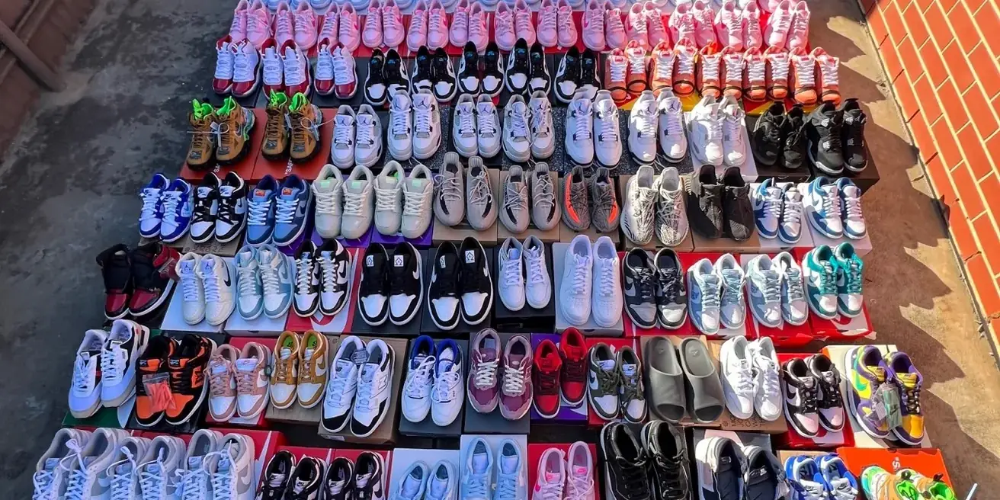
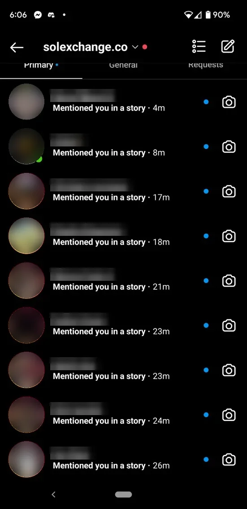
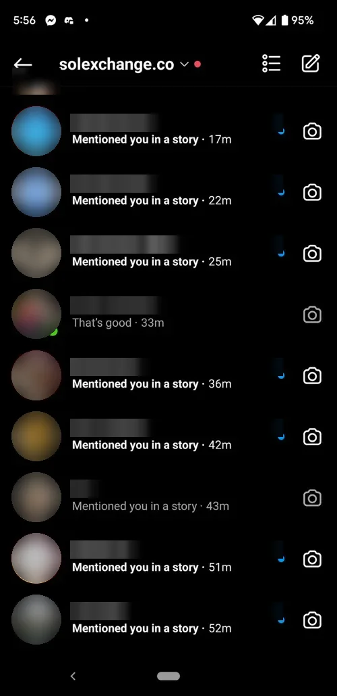
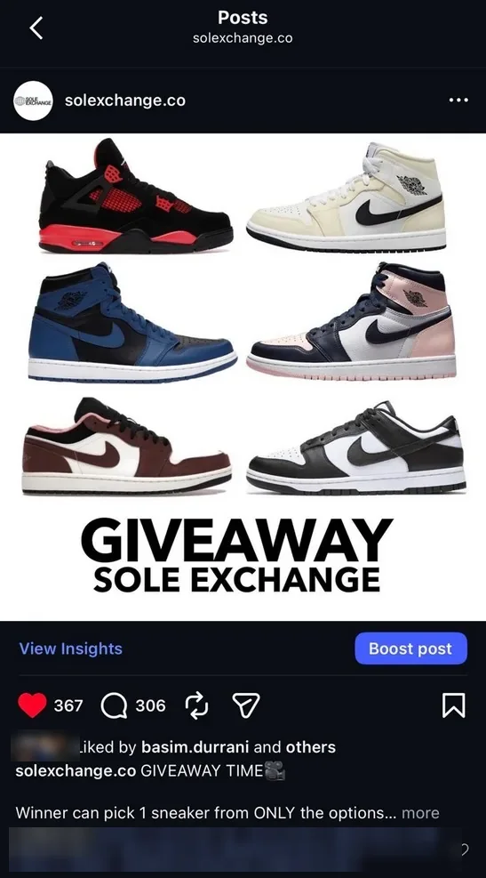
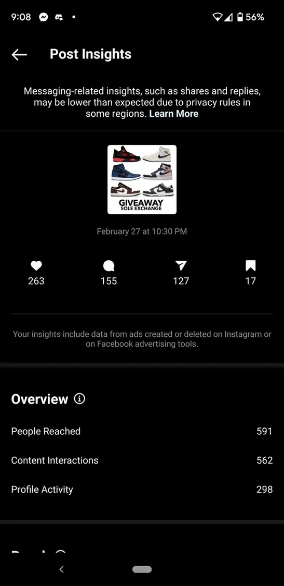
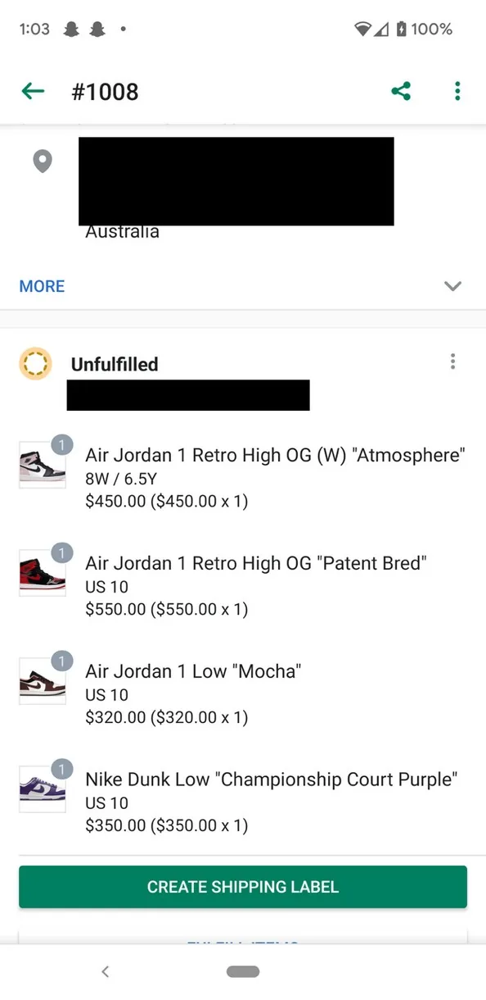
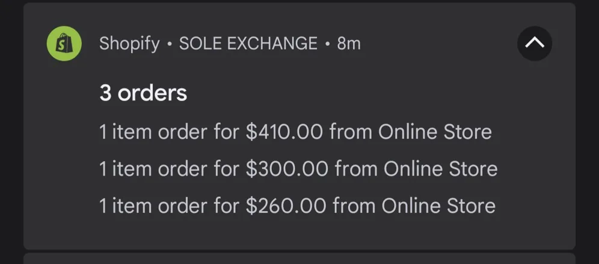

Sole Exchange
How I built a sneaker resale brand on Instagram, turned attention into sales across eight channels, and kept buyers coming back.
- My role
- Founder & marketing lead; Shopify co-founder
- Period
- 2020 – 2025
- Market
- Australia, sneakers & streetwear
- Tools
- Instagram, Shopify, StockX, GOAT


A small page with a high-intent audience
The page never chased follower count. It ran on consistent product posts, fast replies and buyers' own content, and its 716 followers were people who actually bought sneakers.
Content pillars
- ProductLimited sneakers shot on a clean background.
- AvailabilityNew arrivals and restocks announced in feed and stories.
- Social proofReposted customer purchases and try-ons.
- EngagementGiveaways and prompts to drive comments and shares.
Community playbook
- Repost cycleBuyer story tags reposted to the brand's story, usually the same day.
- Permanent proofA “Customers” highlight, so new visitors saw real buyers straight away.
- One-to-one repliesDMs answered personally within minutes, turning browsers into orders.
- DiscordA community channel for repeat buyers and referrals.


Customer story tags arriving within a single hour.
Social proof on repeat
Buyers tagged the page when their pairs arrived. Every tag was reposted to the brand's story, usually the same day, so new visitors saw real customers before they ever sent a DM.
One giveaway, 2.9× the follower base
One giveaway became the page's best-performing post and put the brand in front of thousands of people who didn't follow it yet.
Objective
Push reach beyond the 716 existing followers and bring new buyers to the page.
Action
A six-sneaker giveaway where the winner picks one. Entry meant liking, commenting, sharing and tagging friends.
Result
591 accounts reached in the first 24 hours, growing to 2,050 reached and 982 interactions. Most came from non-followers.
Learning
A real prize and a tag-to-enter mechanic beat standard product posts for reach and new-audience discovery.


Eight channels, one pricing discipline
Instagram created demand. The other channels widened reach and closed sales. Every listing was priced against the live market.
| Channel | Role in the funnel |
|---|---|
| Discovery, brand-building and one-to-one sales through DMs | |
| Shopify | Direct checkout on a co-designed store with free shipping |
| StockX · GOAT | Marketplace reach and live resale price benchmarks |
| eBay · Marketplace | Broad and local reach for everyday pairs |
| Discord | Community, repeat buyers and referrals |
| Consignment | In-store exposure through a Melbourne sneaker store |
Pricing approach
- Market referenceChecked StockX and GOAT resale prices for every pair before listing.
- TimingHeld stock through hype cycles when price history showed rising demand.
- FrictionFree shipping on Shopify to compete with marketplaces that add costs at checkout.


Three lessons
The right audience beats a bigger one
716 followers who wanted sneakers were worth more than a large audience that didn't buy.
Fast replies win sales
Answering DMs in minutes turned casual interest into orders. In sneakers, whoever replies first usually gets the sale.
Price against the market
Checking StockX and GOAT before every listing protected margin and avoided dead stock.
What I'd do differently
- Own the audienceCapture buyers' emails at checkout and run a simple new-release email list instead of relying on Instagram reach.
- Measure from day oneTrack traffic sources and conversion rate in Shopify and Google Analytics, so every channel's contribution is clear.
- Retarget engaged audiencesFollow up giveaway entrants and profile visitors with a small paid social campaign.
Skills used
- Social media strategy
- Content planning
- Campaign reporting
- Community management
- User-generated content
- Social selling
- Shopify
- Multi-channel e-commerce
- Pricing research
- Product photography
Next case study
EL&e Desserts